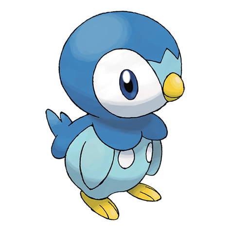

#0393
Piplup is very proud, so it has a hard time accepting food from humans and bonding with its caretakers. Its strong pride makes it puff out its chest after it falls down, which it often does due to its poor walking abilities. However, it is a skilled swimmer that can dive for over ten minutes in order to hunt.

#0501
Oshawott are born with scalchops attached. These scalchops are as sharp as blades and are used to slash at foes and keep them at bay. Oshawott also use scalchops to slice open hard berries when eating and thick vines when traveling. Because they rely on their scalchops so heavily, Oshawott will guard them with their lives.

#0559
Scraggy is easily engaged in battle, as it will attack anyone that so much as meets its gaze with a headbutt from its thick cranium. The skull is extremely hard. They are known to take pride in their sturdy skulls, causing them to suddenly headbutt everything. However, the weight of its skull makes it hard for Scraggy to balance itself.